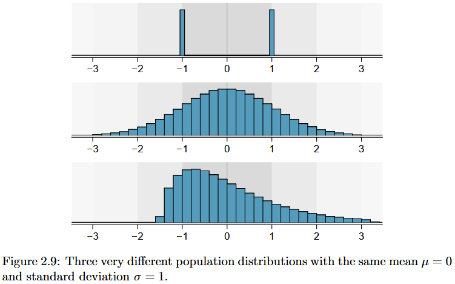
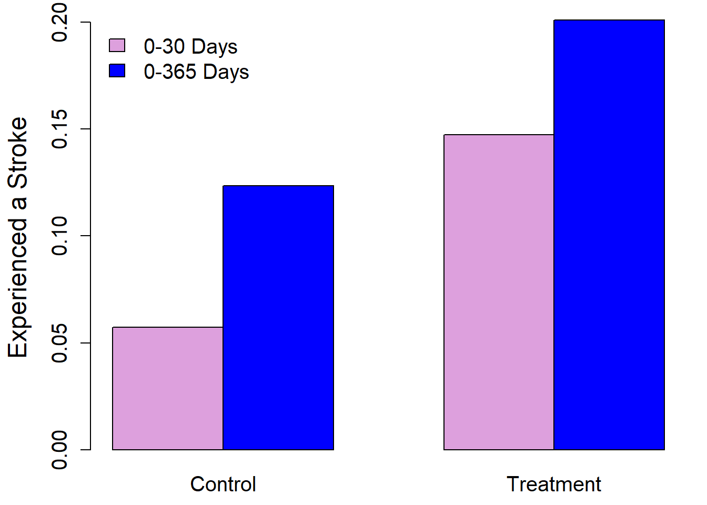
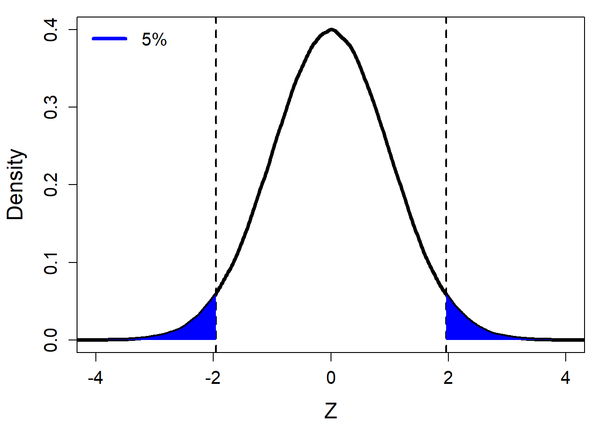
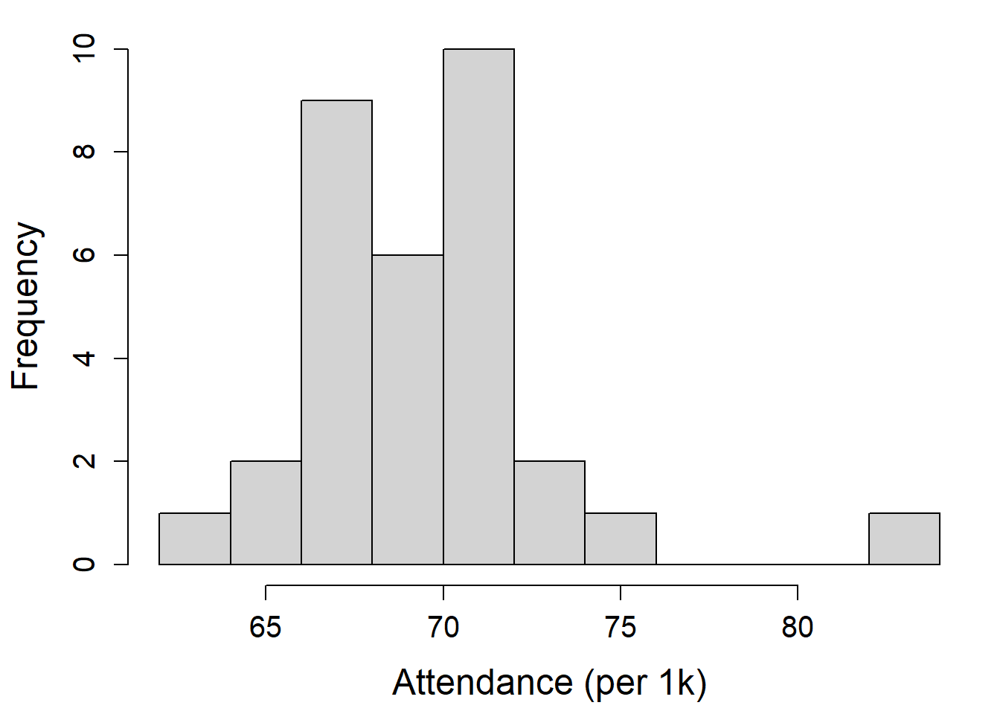
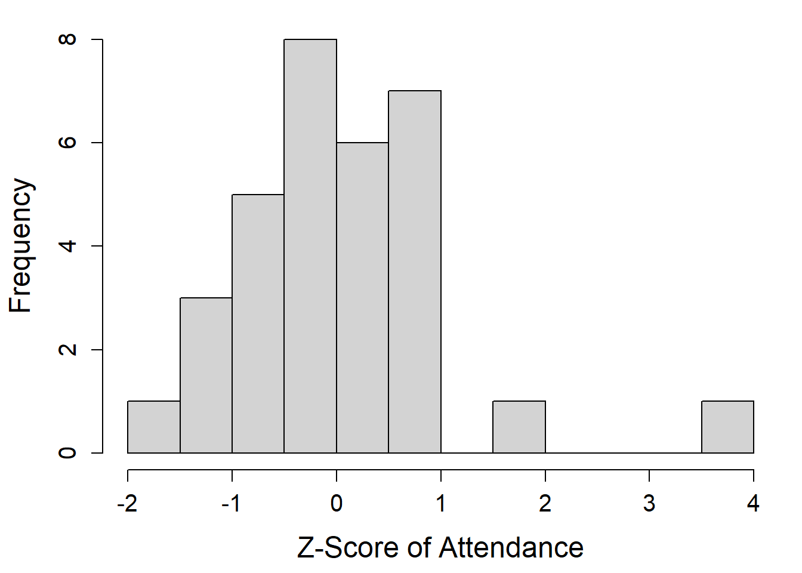
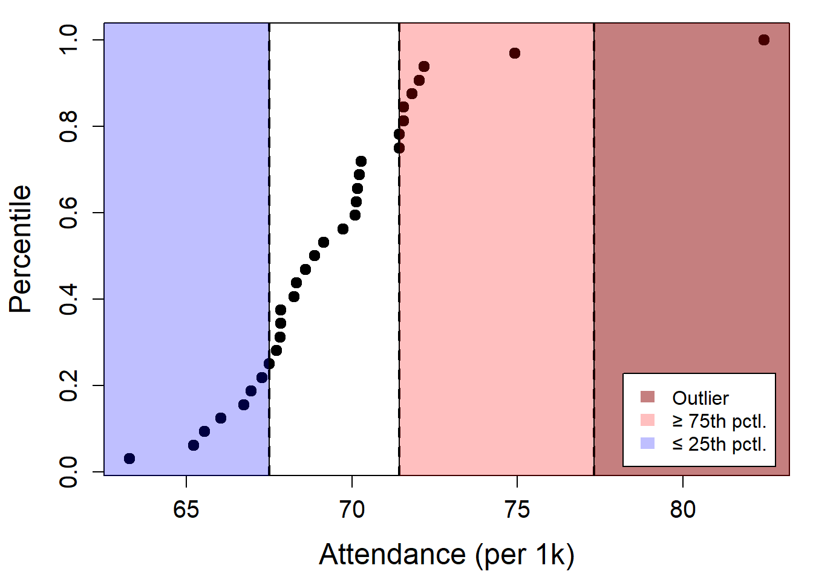
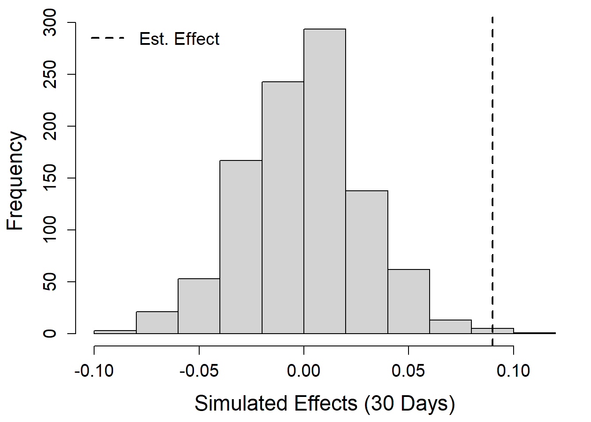
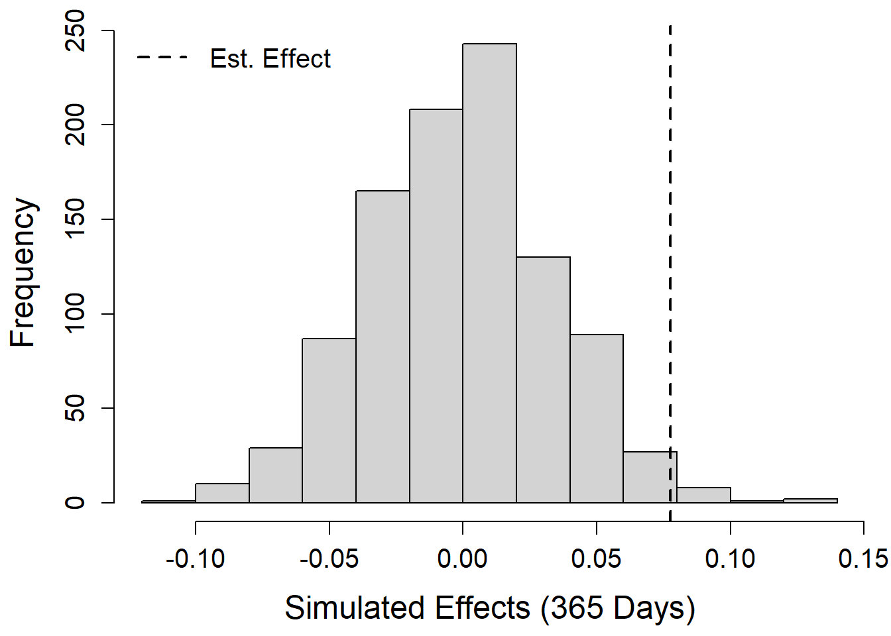
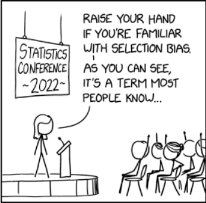

# read in data
df30 <- read.csv("data/stent30.csv")
df365 <- read.csv("data/stent365.csv")Unit 1 Notes | Statistics for Business II | Spring 2026
Intro to Statistics
- Applied statistics uses data to evaluate competing claims about reality
- Focused on the question of “compared to what?”
Variable Types & Distributions Review
- Numerical: measured or counted
- Discrete: countable (jumps)
- Continuous: measurable
- Categorical: labels or groups
- Nominal: no order
- Ordinal: ordered
- Histogram: binned counts of a numerical variable
- Shape:
- Right / left skewed
- Symmetric (“bell-shaped”)
- Uniform
- Skewness: direction of the long tail
- Mode(s): Unimodal, bimodal, multimodal
- Shape:

Equations Review
- Mean: average value
- “What is typical?”
\[ \bar{x} = \frac{1}{n}\sum_{i=1}^n x_i \]
- Variance: spread around the mean
- “How far is the data from average?”
\[ \sigma^2 = \frac{1}{n-1}\sum_{i=1}^n (x_i - \bar{x})^2 \] - Standard deviation: \(\sigma\)
Case Study: Stents and Stroke Risk
- Goal: Test whether stents reduce stroke risk
- Stroke: Brain cell death caused by reduced blood flow
- Stent: Small mesh tube used to keep arteries open
- Stroke: Brain cell death caused by reduced blood flow
- Study design: Randomized Controlled Trial (RCT)
- Random assignment -> comparable groups
- Treatment: Stents + medical management (MM)
- Control: Medical management only
- MM = medication + risk-factor control + lifestyle changes
Case Study: Visualizing the Data
Descriptive Statistics
- Descriptive statistics summarize data at a glance
- In R:
table(),summary()
- In R:
- A summary statistic: A single number that captures key features of the data
# create summary statistics
table(df30) outcome
group no event stroke
control 214 13
treatment 191 33table(df365) outcome
group no event stroke
control 199 28
treatment 179 45# merge data frames into one
x <- data.frame(
patient = 1:nrow(df30),
group = df30$group,
event_30 = ifelse(df30$outcome == "no event", 0, 1),
event_365 = ifelse(df365$outcome == "no event", 0, 1)
)
head(x) patient group event_30 event_365
1 1 treatment 1 1
2 2 treatment 1 1
3 3 treatment 1 1
4 4 treatment 1 1
5 5 treatment 1 1
6 6 treatment 1 1summary(x) patient group event_30 event_365
Min. : 1.0 Length:451 Min. :0.000 Min. :0.0000
1st Qu.:113.5 Class :character 1st Qu.:0.000 1st Qu.:0.0000
Median :226.0 Mode :character Median :0.000 Median :0.0000
Mean :226.0 Mean :0.102 Mean :0.1619
3rd Qu.:338.5 3rd Qu.:0.000 3rd Qu.:0.0000
Max. :451.0 Max. :1.000 Max. :1.0000 # mean
sum(x$event_30) / nrow(x)[1] 0.1019956mean(x$event_30)[1] 0.1019956# variance
deviation <- x$event_30 - mean(x$event_30)
variance <- sum(deviation^2) / (nrow(x)-1)
variance[1] 0.09179601var(x$event_30)[1] 0.09179601# standard deviation
std_dev <- sqrt(variance)
std_dev[1] 0.3029786sd(x$event_30)[1] 0.3029786# aggregate data
y <- aggregate(event_30 ~ group, x, mean)
z <- aggregate(event_365 ~ group, x, mean)
y$event_365 <- z$event_365
y group event_30 event_365
1 control 0.05726872 0.1233480
2 treatment 0.14732143 0.2008929# difference between treatment and control
effect_30 <- y$event_30[2] - y$event_30[1]
effect_365 <- y$event_365[2] - y$event_365[1]
effect_30[1] 0.09005271effect_365[1] 0.07754484# convert percentage point differences into percent differences
pct_diff_30 <- effect_30 / mean(x$event_30)
pct_diff_365 <- effect_365 / mean(x$event_365)
pct_diff_30[1] 0.8829081pct_diff_365[1] 0.4790784# transpose; convert to matrix
m <- t(y[,2:3])
m <- as.matrix(m)
colnames(m) <- y$group
m control treatment
event_30 0.05726872 0.1473214
event_365 0.12334802 0.2008929# plot bar chart
par(mar = c(2.5, 4.5, 1, 1))
barplot(
m,
beside = TRUE,
ylab = "Experienced a Stroke",
xlab = "",
cex.lab = 1.5, cex.axis = 1.25, cex.names = 1.25,
names.arg = c("Control", "Treatment"),
col = c("plum", "blue"),
legend.text = c("0-30 Days", "0-365 Days"),
args.legend = list(x = "topleft", bty = "n", cex = 1.25)
)
Random Chance or Real Effect?
Observed difference: Rates differ by 9 percentage points between groups
Why this likely reflects a real effect:
- Larger samples reduce random fluctuation
- Larger differences are less likely due to chance
Context matters:
- 9 (7.8) p.p. difference vs. mean of 10.2% (16.2%)
- ≈ 88% (48%) increase relative to the mean
Outliers
- Standardization (z-scores)
- \(z_i = \frac{x_i - \bar{x}}{sd(x)}\)
- Common cutoff: \(|z| \geq 2\)
- Upside: Simple
- Downside: Sensitive to distribution shape
# generate data
set.seed(1)
z <- rnorm(n = 1000000, mean = 0, sd = 1)
# percent of observations greater than 1.96
mean(ifelse(abs(z) >= 1.96, 1, 0))[1] 0.050265# density
dz <- density(z)
# plot
par(mar = c(4.5, 4.5, 1, 1))
plot(dz$x, dz$y, type = "l", lwd = 4,
xlab = "Z", ylab = "Density",
cex.lab = 1.5, cex.axis = 1.25,
xlim = c(-4, 4))
# draw vertical lines
abline(v = c(-1.96, 1.96), lwd = 2, lty = 2)
# indices for the shaded regions
iL <- dz$x <= -1.96
iR <- dz$x >= 1.96
# left tail polygon
polygon(
x = c(dz$x[iL], rev(dz$x[iL])),
y = c(dz$y[iL], rep(0, sum(iL))),
border = NA, col = "blue"
)
# right tail polygon
polygon(
x = c(dz$x[iR], rev(dz$x[iR])),
y = c(dz$y[iR], rep(0, sum(iR))),
border = NA, col = "blue"
)
# legend
legend("topleft",
legend = c("5%"),
col = "blue", lwd = 4,
cex = 1.25, bty = "n")
- Interquartile Range (IQR)
- \(Q_1\): 25th percentile, \(Q_3\): 75th percentile
- \(IQR = Q_3 - Q_1\)
- Outliers:
- \(< Q_1 - 1.5 \times IQR\)
- \(> Q_3 + 1.5 \times IQR\)
- Upside: Robust to skewness
- Downside: More complex
- \(Q_1\): 25th percentile, \(Q_3\): 75th percentile
# read in data
nfl <- read.csv("data/2024 NFL Attendance Data.csv")
# clean data to average weekly attendance
n <- data.frame(
team = nfl$Tm,
attend = rowMeans(nfl[,5:22], na.rm = T) / 1000
)
# plot distribution
par(mar = c(4.5, 4.5, 1, 1))
hist(n$attend, breaks = 12,
main = "", xlab = "Attendance (per 1k)",
cex.axis = 1.25, cex.lab = 1.5)
# standardize and plot
n$z <- (n$attend - mean(n$attend)) / sd(n$attend)
hist(n$z, breaks = 12,
main = "", xlab = "Z-Score of Attendance",
cex.axis = 1.25, cex.lab = 1.5)
# sort by largest attendance
n <- n[order(-n$attend),]
n$rank <- 1:nrow(n)
n$pctl <- n$rank / nrow(n)
n$pctl <- rev(n$pctl)
## IQR
q1 <- n$attend[n$pctl == 0.25]
q3 <- n$attend[n$pctl == 0.75]
iqr <- q3 - q1
out_l <- q1 - 1.5 * iqr
out_r <- q3 + 1.5 * iqr
n$outlier <- ifelse(n$attend <= out_l, 1, 0)
n$outlier <- ifelse(n$attend >= out_r, 1, n$outlier)
plot(n$attend, n$pctl, pch = 19, cex = 1.25,
cex.axis = 1.25, cex.lab = 1.5,
xlab = "Attendance (per 1k)", ylab = "Percentile")
abline(v = c(q1, q3), lty = 2, lwd = 2)
abline(v = c(out_l, out_r), lty = 2, lwd = 2)
i <- 0.25
cols <- c(adjustcolor("darkred", alpha.f = 0.5),
adjustcolor("red", alpha.f = 0.25),
adjustcolor("blue", alpha.f = 0.25))
rect(out_r, 0-i, max(n$attend)+10, 1+i, col = cols[1])
rect(q3, 0-i, out_r, 1+i, col = cols[2])
rect(out_l-i, 0-i, q1, 1+i, col = cols[3])
legend("bottomright",
legend = c("Outlier", "≥ 75th pctl.", "≤ 25th pctl."),
fill = cols, border = NA, inset = 0.02, bg = "white")
- Log transformation
- Upside: Tames outliers and skewness
- Downside: Undefined at zero
ctys <- read.csv("data/county.csv")
par(mar = c(4.5, 4.5, 1, 1))
hist(ctys$pop2017, main = "",
xlab = "County Population",
cex.axis = 1.25, cex.lab = 1.5,)
hist(log(ctys$pop2017), main = "",
xlab = "log(County Population)",
cex.axis = 1.25, cex.lab = 1.5,)
Simulation Analysis
- Simulation analysis:
- Uses repeated random sampling to approximate results
- Useful when analytic solutions are impractical
- Key idea:
- Randomness helps us understand variability and uncertainty
- Data Generating Process (DGP):
- Example: flipping a fair coin
- Random fluctuation is inherent
- The true DGP is unobservable
- Samples are random draws from the underlying process
Simulation Analysis: Case Study
table(x$group)
control treatment
227 224 n_ctrl <- 227
n_trtd <- 224
loops <- 1000
## 30 days
sims <- list()
for(i in 1:loops){
set.seed(i)
sim_30_ctrl <- rbinom(n_ctrl, size = 1, prob = mean(x$event_30))
set.seed(i+loops)
sim_30_trtd <- rbinom(n_trtd, size = 1, prob = mean(x$event_30))
sims[[length(sims)+1]] <- mean(sim_30_trtd) - mean(sim_30_ctrl)
}
sims <- unlist(sims)
mean(ifelse(sims >= effect_30, 1, 0))[1] 0.003par(mar = c(4.5, 4.5, 1, 1))
hist(sims,
main = "", xlab = "Simulated Effects (30 Days)",
cex.lab = 1.5, cex.axis = 1.25)
abline(v = effect_30, lty = 2, lwd = 2)
legend("topleft", legend = "Est. Effect",
lwd = 2, lty = 2, bty = "n", cex = 1.25)
## 365 days
sims_365 <- list()
for(i in 1:loops){
set.seed(i)
sim_365_ctrl <- rbinom(n_ctrl, size = 1, prob = mean(x$event_365))
set.seed(i+loops)
sim_365_trtd <- rbinom(n_trtd, size = 1, prob = mean(x$event_365))
sims_365[[length(sims_365)+1]] <- mean(sim_365_trtd) - mean(sim_365_ctrl)
}
sims_365 <- unlist(sims_365)
mean(ifelse(sims_365 >= effect_365, 1, 0))[1] 0.014par(mar = c(4.5, 4.5, 1, 1))
hist(sims_365,
main = "", xlab = "Simulated Effects (365 Days)",
cex.lab = 1.5, cex.axis = 1.25)
abline(v = effect_365, lty = 2, lwd = 2)
legend("topleft", legend = "Est. Effect",
lwd = 2, lty = 2, bty = "n", cex = 1.25)
Why Experimental Design Matters
RCTs = gold standard for causal inference
Two key pillars:
- Random assignment
- Reduces selection bias and confounding
- Improves internal validity
- Reduces selection bias and confounding
- Comparison (control) group
- Provides a baseline
- Separates treatment effects from outside trends
- Random assignment
Example:
- If incomes are rising and income affects longevity:
- Randomization -> similar income changes across groups
- Control group -> nets out income effects
- Remaining difference = treatment effect
- If incomes are rising and income affects longevity:
Key terms:
- Internal validity: credible cause-and-effect
- External validity: generalizability
- Confounder: affects both treatment and outcome
Sources of Bias
- Selection bias: Groups differ for reasons other than treatment
- Caused by self-selection / contamination
- “People die in hospitals” ≠ hospitals cause death
- Example:
- Health-conscious patients are more likely to: receive a stent and change lifestyle habits
- Estimated effect mixes treatment + lifestyle, not treatment alone
- Caused by self-selection / contamination

- Sampling bias: Sample is not representative of the population
- Classic example (1936):
- Literary Digest surveyed 10M people (2.4M responses)
- Predicted Landon landslide
- Actual result: FDR won decisively
- Why it failed:
- Sampled wealthy groups (magazine readers, car & phone owners)
- Missed lower-income voters
- Key lesson: More data cannot fix a biased sample
- Classic example (1936):

- Survivorship bias: Only observing units that “survive” to be measured
- When measurement depends on the outcome:
- Suppose stents increase mobility
- Treated patients are more likely to show up for follow-ups
- Control group is under-observed
- Estimated effect partly reflects who is observed, not just treatment
- Common fallacies:
- “People lived longer back then”
- “My uncle smokes three packs a day and he’s fine”
- When measurement depends on the outcome:

Blinding and Placebos
Goal: Reduce psychological effects
Key terms:
- Blinding: Patients don’t know their group
- Placebo: Fake treatment
- Placebo effect: Control group shows real changes
- Why it matters:
- Beliefs can affect outcomes
- Placebo effects contaminate comparisons
- Can reduce power → Type II errors
Statistical Errors
- Type I error: False positive
- Claim an effect that isn’t there
- Reject a true null
- Example: Conclude coin is biased when p = 0.5
- Claim an effect that isn’t there
- Type II error: False negative
- Miss a real effect
- Fail to reject a false null
- Example: Conclude coin is fair when p = 0.6
- Miss a real effect